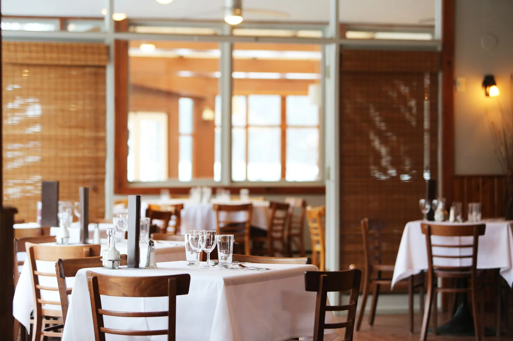
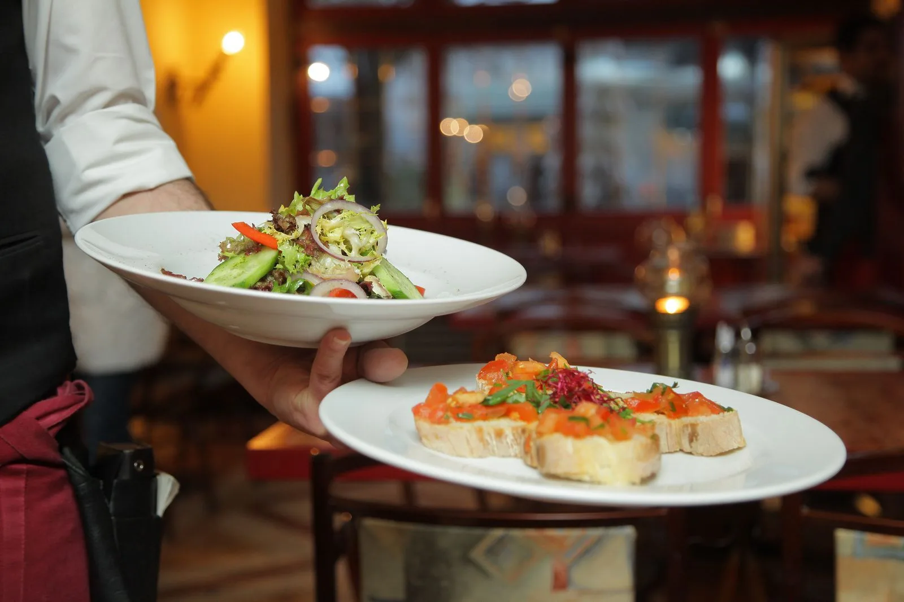

Plantain doré
Citron vert, piment doux

La bonne cuisine rapproche.
Une cuisine généreuse. Une table qui s’étire. Une soirée qu’on prend le temps de vivre.
Découvrir la carte01 / L’esprit de la maison

Des produits simples, une cuisson juste et le plaisir de partager. La carte suit les envies de la cuisine ; la table, les vôtres.
Faisons connaissance
Essayez ce parcours avec des informations fictives. La demande reste dans votre navigateur ; aucun message n’est envoyé.